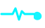

Loading…

Loading…
Rough estimate. Pick a size for what was on the plate — zero is fine.
Hands are portion sizes, not food rules. Use the size that matches the amount.
A food can use different sizes. A steak is a palm, yoghurt is cupped, cheese is a thumb, and diced chicken in a bowl might be a fist. If a meal had two different amounts of the same category, pick the closest combined size.
Mixed dish? Estimate the total of each component, not each piece.
Close enough is fine. Leave a category at zero if it wasn’t there.